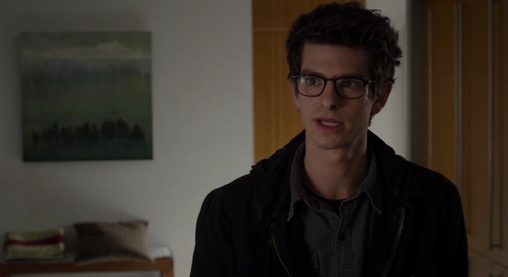

ピーター・パーカー / スパイダーマン
孤独を抱える天才スケーター高校生 // アメイジングな隣人
幼い頃に両親が失踪した過去を持つ青年。オズコープ社に潜入した際、父の研究対象であったバイオ・スパイダーに噛まれて超人化。自身の知能を活かして液体ウェブと機械式の「ウェブシューター」を自作する。ベンおじさんを殺した犯人を追う復讐心から、次第に本当の「ヒーロー」の責任へと目覚めていく。
「秘密を抱えるのは辛いよ。……でも、僕にしかできない仕事なんだ。ニューヨークの街には、僕が必要なんだ。」
グウェン・ステイシー
オズコープ社の天才インターン // 警察署長の娘
ピーターの同級生であり、オズコープ社でコナーズ博士の筆頭助手を務める極めて聡明なヒロイン。ピーターがスパイダーマンであることを割と早い段階で打ち明けられ、恐怖を抱きつつも自らの科学の知識を活かして、リザードの解毒剤開発の最前線に立つ。
「ピーター、あなたを見ていると……危なっかしくて目が離せないわ。」

ベン・パーカー (ベンおじさん)
ピーターを実の親として育てた最愛の伯父
失踪した弟夫婦に代わり、ピーターを深い愛情で育ててきた優しい伯父。思春期ゆえに傲慢な態度を取ったピーターと口論になり、その後、ピーターがコンビニで見逃した強盗に銃撃されて命を落としてしまう。彼の残した「責任」にまつわるメッセージがピーターの魂の礎となる。
「お前は良い子だ、ピーター。忘れるな。大いなる力には大いなる責任が伴うものだ」

カート・コナーズ博士 / リザード
右腕を失った天才生物学者 // 爬虫類の怪物
元ピーターの父親の共同研究者であり、トカゲの再生能力を人間に応用する「異種間遺伝子交差」を研究する。会社からの圧迫と「右腕を取り戻したい」という焦りから、未完成の薬品を自らに投与。右腕の再生には成功するが、トカゲの闘争本能に脳を支配され、巨躯の怪物「リザード」へと変貌、街全体をトカゲ化しようと暴走する。
「人間は脆弱で不完全な生き物だ！なぜトカゲのように進化しようとしない！？……私は彼らを救おうとしているのだ！」